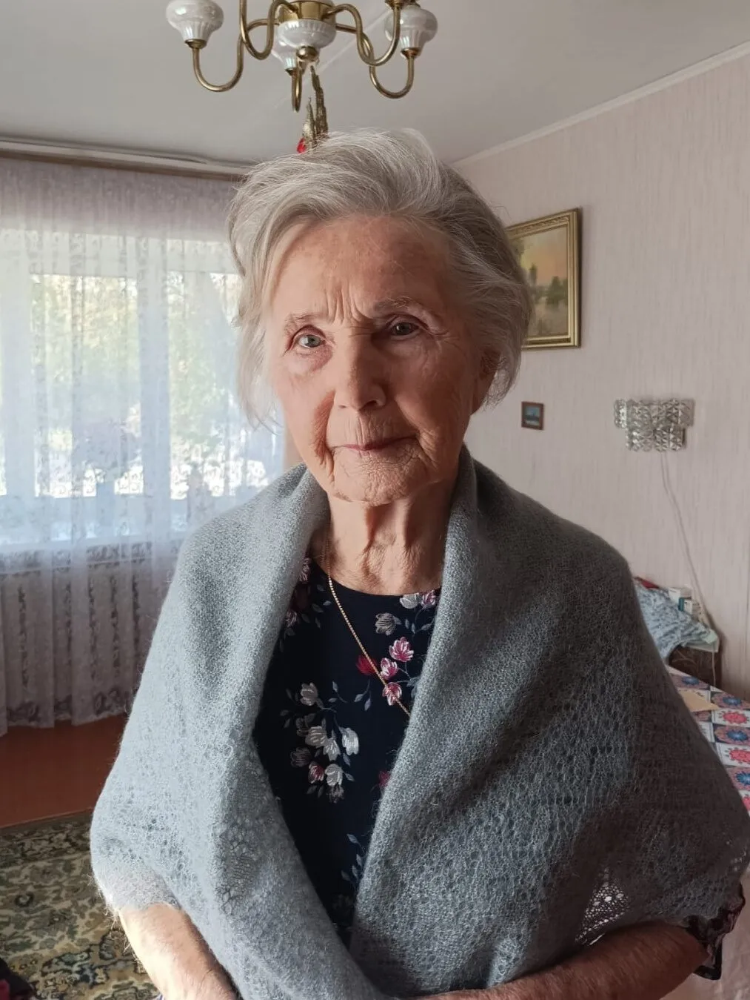
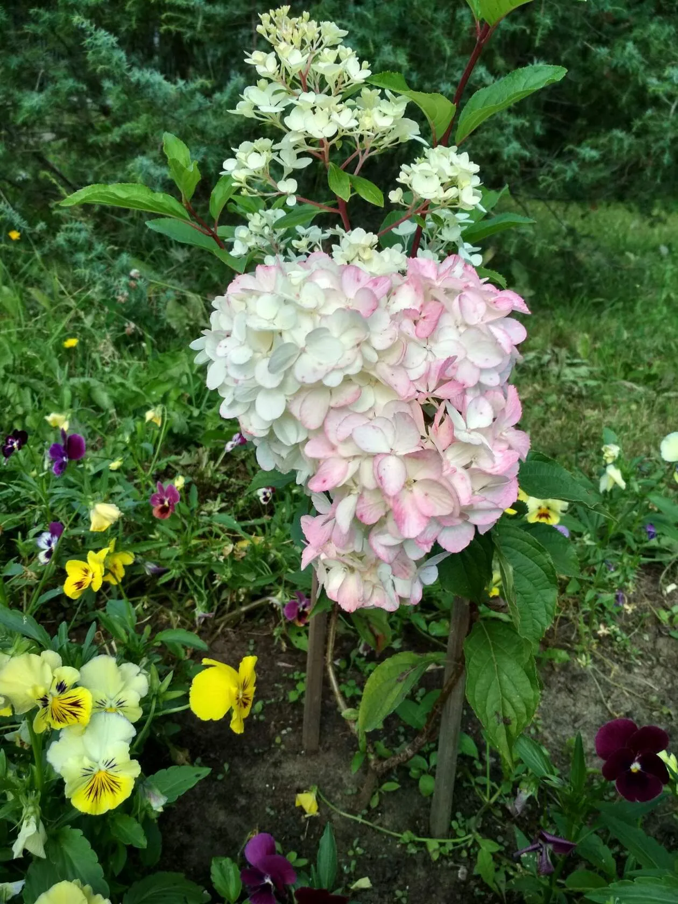

Когда-то на рынке возле нашего дома продавали беляши. Очередь к этому месту была всегда. Люди специально приходили именно туда, потому что знали: беляши будут свежие, горячие и очень ароматные. Но сколько бы я их ни пробовал, домашние всё равно нравятся больше.
Для теста:
— Вода тёплая — 500 мл
— Соль — 1 ч. л. с горкой
— Сахар — 2 ч. л.
— Дрожжи сухие — 7 г
— Мука пшеничная — 700–750 г
— Растительное масло — 2–3 ст. л.
Для начинки:
— Свинина — 500 г
— Говядина — 500 г
— Лук репчатый — 2 крупные шт.
— Вода ледяная — 150 мл
— Соль — по вкусу
— Перец чёрный молотый — по вкусу
Для жарки:
— Растительное масло — по необходимости
Приготовление:
1. Сначала приготовим тесто. Берём пол-литра тёплой воды примерно 35–38 градусов. Добавляем одну чайную ложку с горкой соли, 2 чайные ложки сахара. 7 граммов сухих дрожжей. Всё это хорошенько перемешиваем и постепенно добавляем 700–750 граммов муки. Тесто должно у нас получиться очень мягкое, но нужно его обязательно хорошо вымесить. В конце замеса нужно добавить 2–3 столовые ложки растительного масла. Тесто замесили и поставили подходить в тёплое место. Подходить оно будет минут 40, а то и час. Тесто, повторяю, должно быть очень-очень мягкое. Теперь приготовим фарш.
2. Я обычно беру два вида мяса — свинину и говядину пополам. Перекручиваю их. Добавляю 2 крупные луковицы. Лук можно порезать, но в моей семье не любят, когда лук кусочками попадается, поэтому я его обязательно перекручиваю. Добавляю соль, перец по вкусу. Хорошенько вымешиваю и добавляю 150 мл ледяной воды. Хорошенько-хорошенько нужно вымесить фарш. Такой, чтобы он стал прямо вязким, но не жидким. И фарш обязательно должен быть жирным. Фарш готов.
3. Тесто подошло. Делим тесто на такие кусочки, какими вы хотели бы видеть беляши. Я очень люблю крупные беляши. Очень часто жарю такие, что один помещается на всю сковородку. Но это на любителя. Обычно делают беляши среднего размера. Около 80–100 граммов теста берут для каждого беляша. Тесто делим на нужное количество шариков. По этому количеству делим начинку. Тесто накрываем, даём ему немного подойти.
4. После этого руками разминаем каждый кусочек теста. Если тесто липковатое, значит, руки можно смазать растительным маслом. В центр кладём начинку и защипываем тесто, как на хинкали. Очень часто в беляшах оставляют в середине дырочку. Но это можно делать, а можно и нет.
5. У меня соседка татарка, она пекла беляши, но у них они назывались перемячи. Так вот, она никогда дырочку не делала. Но если вы делаете дырочку, в этом случае беляши нужно жарить сначала стороной с дырочкой вниз. И жарить беляши нужно в большом количестве растительного масла на среднем огне. Тогда они хорошо поднимаются, становятся пышными, воздушными, корочка получается зажаристой, а внутри течёт сок.
6. Разламываешь такой беляш, а по рукам бежит мясной сок. Очень вкусно. Беляши получаются бесподобные. А попробуйте когда-нибудь испечь беляши, такие, как пекут на всю сковородку. Как же это вкусно! Заваривайте вкусный чай и пейте!
Комментарии
23В драниках всегда слышится сексуальный подтекст.
Кому как! Каждый рассуждает по мере своей испорченности!
Ну только если ты страдалец по сексу.
В драники ещё добавляют тыкву и кабачки. Я делаю так: картошку на крупную тёрку, сырые яйца, лук репчатый, соль. Кушает моя семья со сметанкой или томатной подливкой. У каждого свой рецепт. Кто что хочет и добавляет, на своё усмотрение.
… 😄 мы сами с усами.
Никогда не добавляю ни муку, ни яйцо, только крахмал из осадка с натёртого картофеля.
Когда отжали жидкость, оставьте минут на 15. Крахмал осядет, вот его и используйте.
А какие ещё бывают драники, кроме картофельных?
Настоящие драники — это тёртый картофель и соль. А то, куда вы добавляете всё остальное, — картофельные оладьи. Спросите у настоящего белоруса.

Точно!!!

А я с недавнего времени, кроме лука, муки и яйца, добавляю тёртый сыр — очень вкусно!
А как же шкварочки?